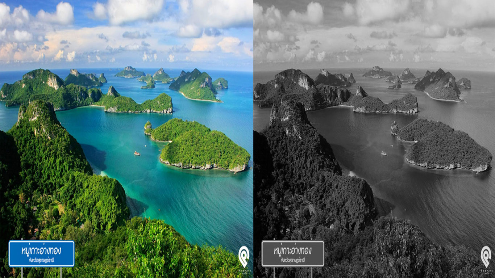
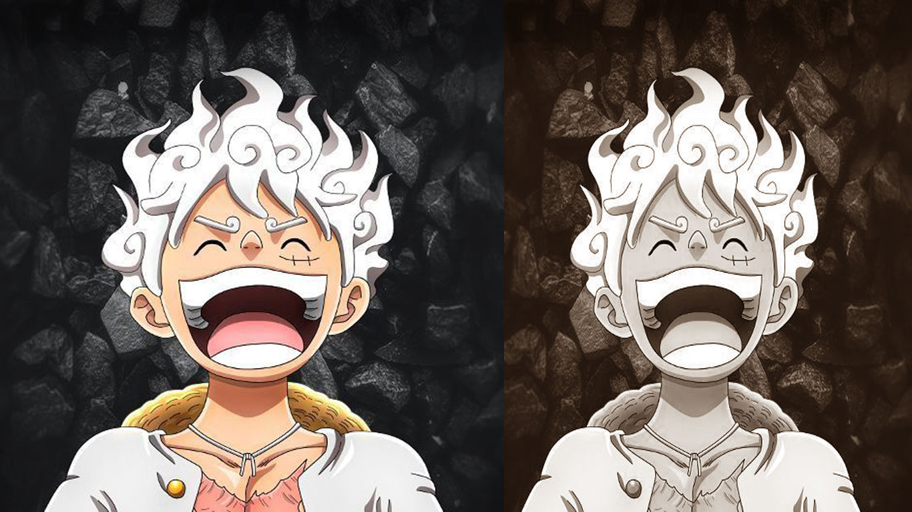
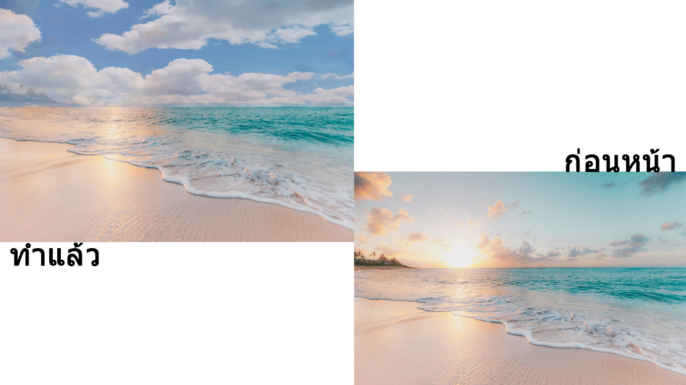
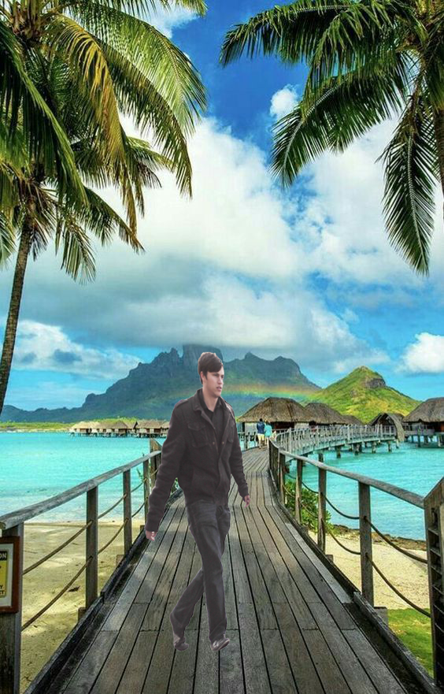
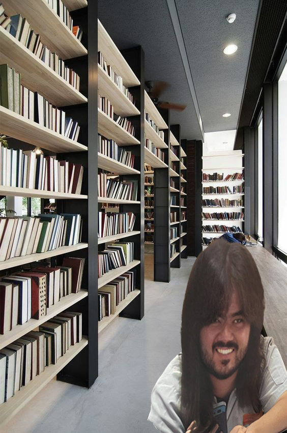
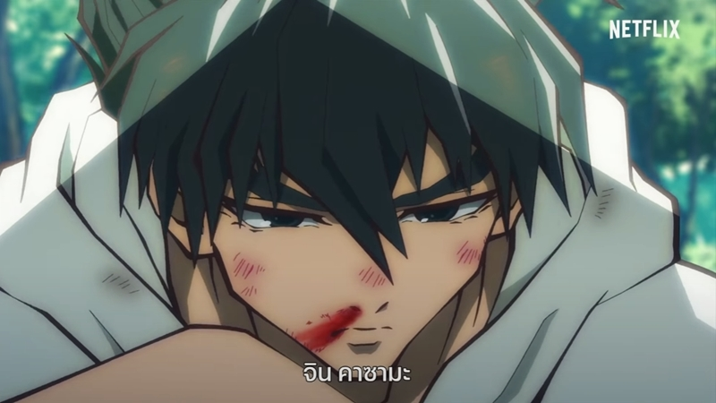
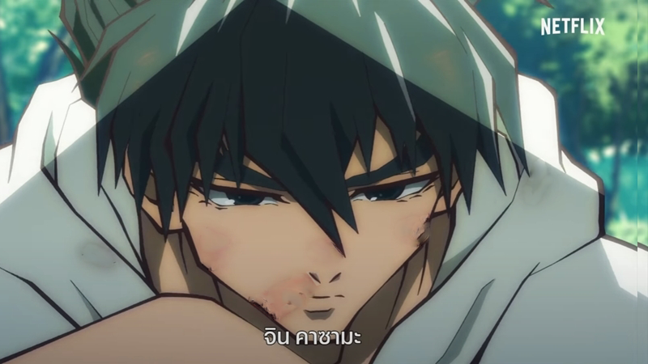
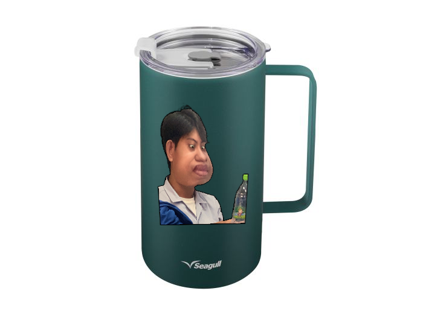
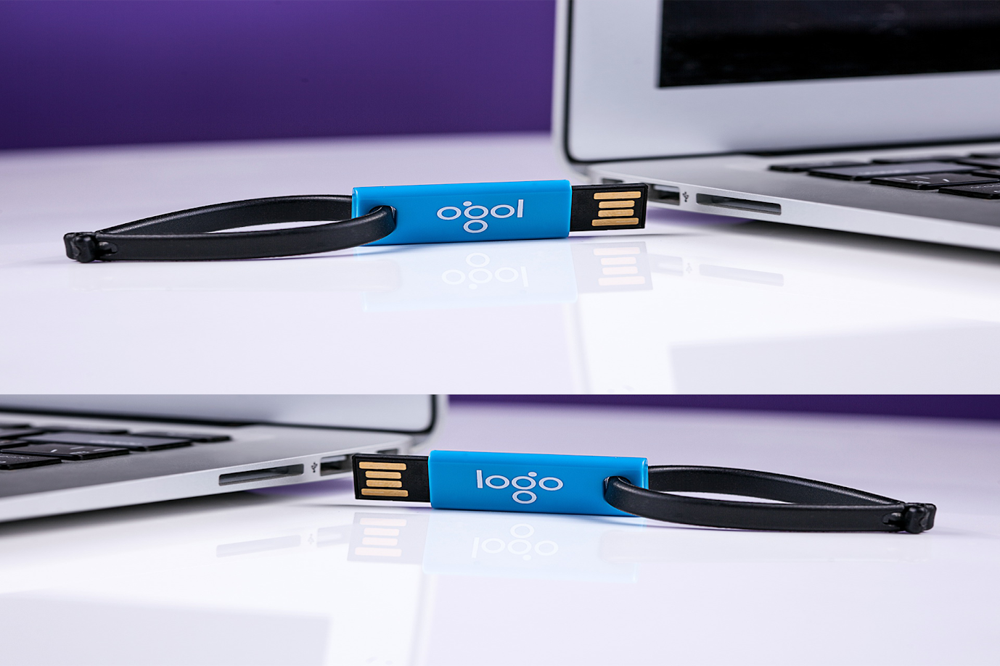

|
งาน 1 งานการเปลี่ยนภาพสีเป็นภาพขาวดำ  งานหน่วยที่ 2 เรื่อง วิธีและกระบวนการคิดสร้างสรรค์ในการออกแบบ  งาน 3 งานการใช้งานเลเยอร์
 งานเทคนิคที่ 1 การนำวัตถุออกจากฉากหลัง (Magic Wand Tool)  งานเทคนิคที่ 2 การย้ายวัตถุไปยังฉากหลังอื่น ๆ (Quick Selection Tool)  งานเทคนิคที่ 3 การกำจัดตาแดงบนภาพถ่าย (Red Eye Tool)
งานเทคนิคที่ 4 การกำจัดสิ่งรุงรังบนภาพออกไป (Clone Stamp Tool) ทำยังไม่ทำ
ทำแล้ว
งานเทคนิคที่ 5 การลบริ้วรอย (Patch Tool) ทำยังไม่ทำ  ทำแล้ว  งานเทคนิคที่ 6 การปรับฉากหลังให้เบลอ งานเทคนิคที่ 7 การบิดภาพเพื่อนำไปวางบนวัตถุ  งานเทคนิคที่ 8 การบิดโครงร่าง  งานเทคนิคที่ 9 การปรับสีท้องฟ้า งานเทคนิคที่ 10 การปรับแนวเส้นที่ลาดเอียงให้ตรง
ทำแล้ว
งานเทคนิคที่ 11 การสร้างภาพไฟฟ้าช็อต งานเทคนิคที่ 12 การสร้างภาพละออง Fairy งานเทคนิคที่ 13 การสร้างภาพฝนตก งานเทคนิคที่ 14 การสร้างโลโก้ด้วย Shape งานเทคนิคที่ 15 การสร้างภาพกระดาษปลิว งานเทคนิคที่ 16 การสร้างตัวอักษรแบบรัศรี งานเทคนิคที่ 17 การสร้างตัวอักษรน้ำแข็ง งานเทคนิคที่ 18 การสร้างตัวอักษรตามเส้น Path งานเทคนิคที่ 19 การสร้างตัวอักษรวงกลม งานเทคนิคที่ 20 การสร้างตัวอักษาแบบการ์ตูน งานเทคนิคที่ 21 การสร้างกรอบรูปเน้นเฉพาะจุด งานเทคนิคที่ 22 การสร้างกรอบรูปแบบซ้อนทับ งานเทคนิคที่ 23 การสร้างกรอบรูปนูนจากภาพ งานเทคนิคที่ 24 การสร้างกรอบรูปการ์ตูน งานเทคนิคที่ 25 การสร้างกรอบรูปแบบหยัก งานเทคนิคที่ 26 การรีทัชลบสิว งานเทคนิคที่ 27 การรีทัชส่วนที่ไม่ต้องการ งานเทคนิคที่ 28 การเซนเซอร์ภาพด้วยโมเสก งานเทคนิคที่ 29 การทำเงาสะท้อนบนพื้นน้ำ งานเทคนิคที่ 30 การสร้างไอน้ำบนแก้วกาแฟ งานเทคนิคที่ 31 การตัดภาพด้วยเครื่องมือ Marquee งานเทคนิคที่ 32 การตัดภาพด้วยเครื่องมืออิสระ Lasso งานเทคนิคที่ 33 การตัดภาพด้วย Quick Selection Tool งานเทคนิคที่ 34 การตัดภาพด้วย Magic Wand Tool งานเทคนิคที่ 35 การเลือกพื้นที่ด้วย Quick Mask |

.png)
.png)


.png)